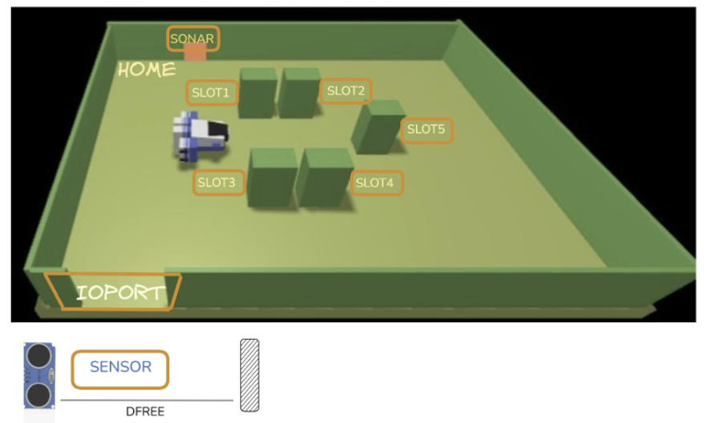
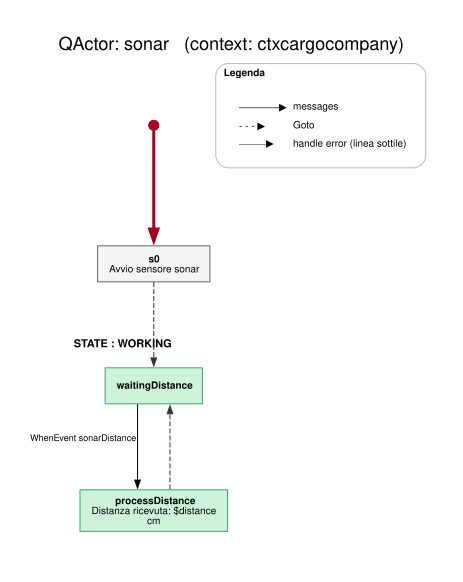
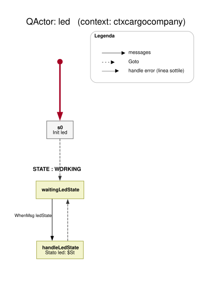

Introduction
GOAL: - Analizzare e sviluppare i componenti relativi al Raspberry Pico W
Requirements

• The sensor associated to the IOPort is a device (a sonar) used to detect the presence of a container, when it measures a distance D, such that D < DFREE/2, during a reasonable time (e.g. 3 secs). • cargoservice sends the answer retrylater, if the IOPort is currently occupied by a container or if the system is Out of service • Otherwise, it considers the system as engaged, detects a free slot and returns as answer the name of such a reserved slot. While engaged, the system must blink a Led. When the request to load is accepted, the customer must move the container in the sensor area within prefixed amount of time (e.g. 30 secs), otherwise the systems becomes disengaged. Then, the cargoservice uses the cargorobot to move the container from the IOPort to the slot5 (for marking the container) and then to the reserved slot. The service must also show on the display on the IOPort: • the message 'Out of service' if the sonar sensor measures a distance D > DFREE for at least 3 secs (perhaps a failure of the sonar).
Requirement Analysis
A partire da quanto svolto nello Sprint1, ci concentriamo sui seguenti requisiti: • Studio e sviluppo del software relativo al Raspberry Pico W. • Studio del macro-componente sonar e della logica relativa alle misurazioni effettuate dal dispositivo fisico. • Studio del macro-componente led e della logica relativa all'accensione e allo spegnimento del led fisico.
Problem Analysis
MQTT: • Data la natura distribuita del nostro sistema occorre decidere come i nodi debbano scambiarsi informazioni, perché la scelta del protocollo ha conseguenze sull’architettura, sulla complessità del codice e sull’affidabilità della comunicazione. Le opzioni possibili sono diverse: socket TCP o UDP diretti, HTTP, CoAP, WebSocket oppure MQTT. • Il protocollo MQTT si adatta alle nostre esigenze: 1. Il protocollo è leggero e pensato per dispositivi con poche risorse: il Pico W ha il Wi-Fi integrato e in MicroPython basta la libreria umqtt.simple per pubblicare e ricevere messaggi con poche righe di codice. 2. Il modello publish/subscribe si adatta bene alla natura del problema: il sonar produce un flusso di misurazioni asincrone e il led riceve comandi occasionali, quindi il sensore pubblica su un topic senza sapere chi lo ascolta, e il broker si occupa di consegnare i messaggi a tutti gli attori interessati. 3. Il sistema QAK supporta MQTT in modo nativo e vede il Pico W solo come una sorgente di eventi su un topic senza il bisogno di conoscere indirizzo IP e PORTA del dispositivo (viceversa per il Pico W).
Software del Pico W:
• Il codice in esecuzione sul Raspberry Pico W dovrà connettersi al Wi-Fi e al broker MQTT e svolgere due compiti in parallelo:
1. Comunire le distanze rilevate.
2. Ricevere lo stato del led associato e gestire il suo funzionamento.
• Per integrarsi con il sistema, il software sviluppato prevede che i messaggi pubblicati dal Pico W usino lo stesso formato dei messaggi QAK.
// Esempio di riferimento:
msg(sonarDistance,event,pico,none,distance(D),N)
In questo modo il runtime QAK riconosce direttamente la misura come l’evento sonarDistance, senza conversioni intermedie.
• L'unità di misura di riferimento sono i centimetri.
Dettaglio messaggi: • MQTTEvent sonarDistance : distance(D) Event ledBlink : ledBlink(STATE)• cargoservice ↔ sonarEvent containerDetected : containerDetected(NOARGS) Event outOfService : outOfService(NOARGS)• cargoservice ↔ ledDispatch ledState : ledState(STATE)Messaggi attesi: - ledState: "on", "off"
Coda dei messaggi: • Gli eventi emessi dal sonar non sono stati, ma segnalazioni che il runtime QAK accoda per ogni attore. Se cargoservice sta svolgendo altre attività, gli eventi emessi restano nella coda associata. • Quando arriva una richiesta di carico, questi eventi potrebbero descrivere una situazione ormai superata. Per evitarlo dobbiamo aggiungere a cargoservice un nuovo stato che consuma e scarta gli eventi accumulati e si concentra su quelli successivi alla richiesta di carico.
Test plans
Project
MQTT mosquitto: • Mosquitto è un broker MQTT open source, leggero e gratuito, che permette la comunicazione tra componenti distribuiti. Funziona da intermediario: riceve i messaggi pubblicati dai Publisher e li inoltra ai Subscriber di una Topic, utilizzando il protocollo MQTT.
Software del Pico W: • Il software sviluppato per il Pico W è capace di gestire tutto ciò che rigurada il sonar HC-SR04 e il led integrato nel microcontrollore. • Software Pico W
Stati del servizio sonar:
• MARCO-STATO: WORKING
| Stato | Descrizione |
|---|---|
| waitingDistance | In attessa di distanze sulla topic MQTT associata. |
| processDistance | Processa la distanza ricevuta e comunica eventuali eventi al sistema. |
Stati del servizio led:
• MARCO-STATO: WORKING
| Stato | Descrizione |
|---|---|
| waitingLedState | In attessa di messaggi. |
| handleLedState | Comunica lo stato del led sulla topic MQTT associata. |
Coda degli eventi di cargoservice: • Si sviluppano degli stati aggiuntivi per drenare la coda dagli eventi (considerati "vecchi") associati a: - containerDetected - outOfService • cargoservice risponde retrylater a una richiesta di carico quando, nella finestra di verifica successiva alla richiesta, riceve un evento "fresco" dal sonar: containerDetected se la zona di carico è già occupata da un container, oppure outOfService se il sonar risulta guasto.
| Stato | Descrizione |
|---|---|
| drainEvents | Consuma un evento associato. |
| waitFreshEvent | Attende un evento considerato "nuovo". |
| handleRetry | Risponde alla richiesta di carico: "retrylater". |
Modello: • Qak eseguibile del sistema.
Testing
Piani di test sviluppati: • Codice test cargohold • Codice test cargoservice